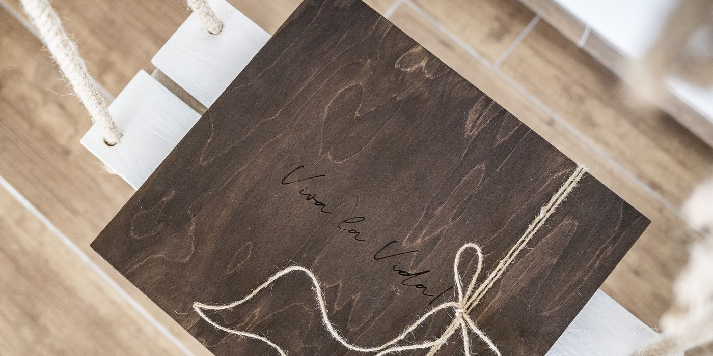
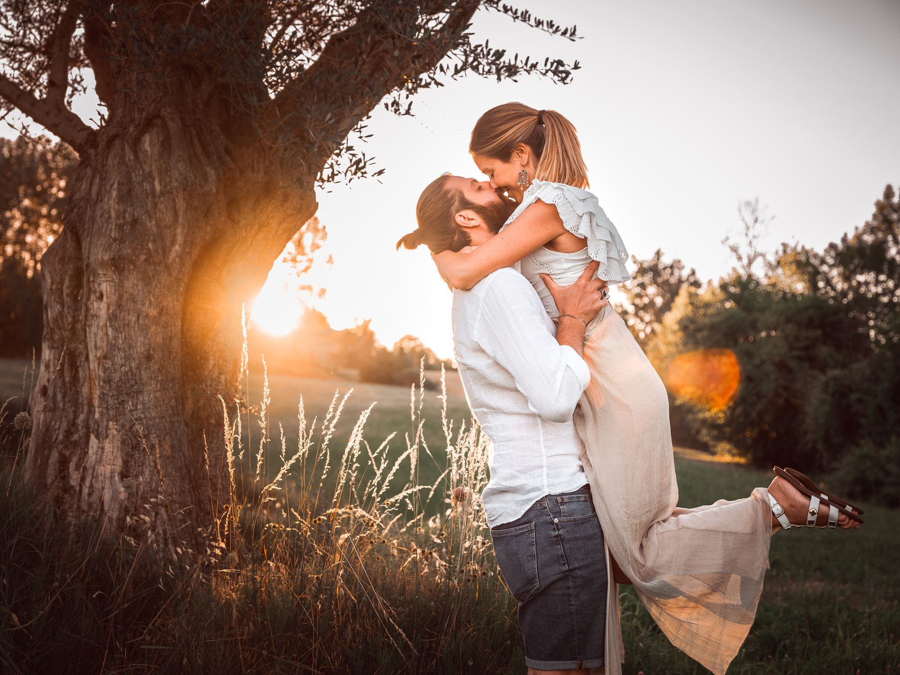
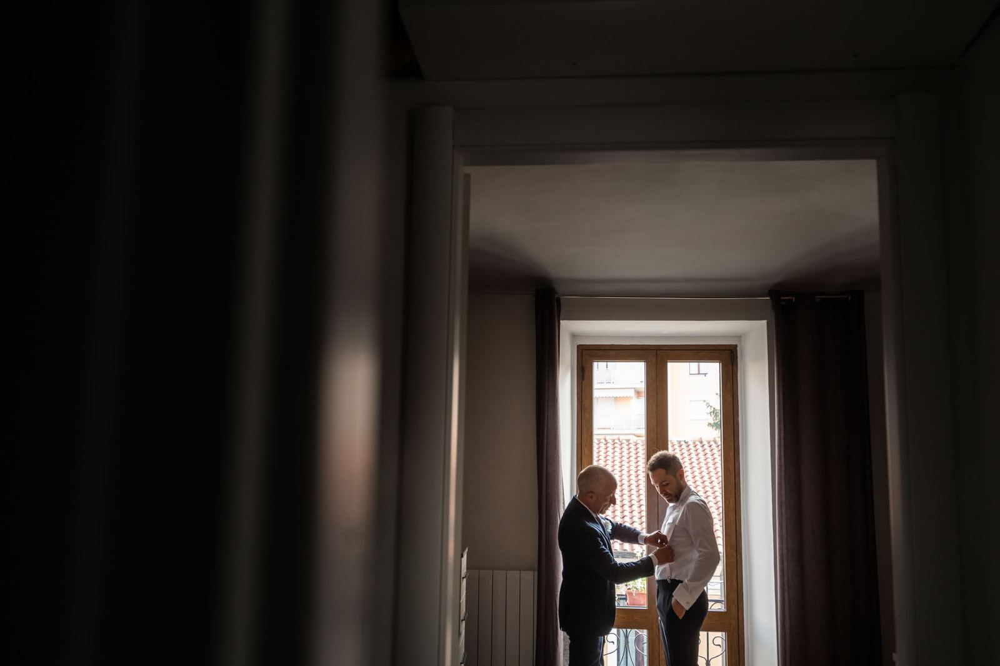
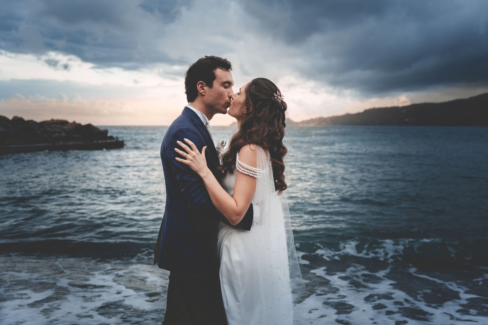
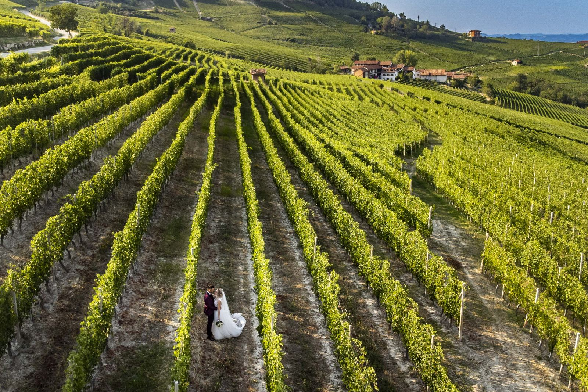
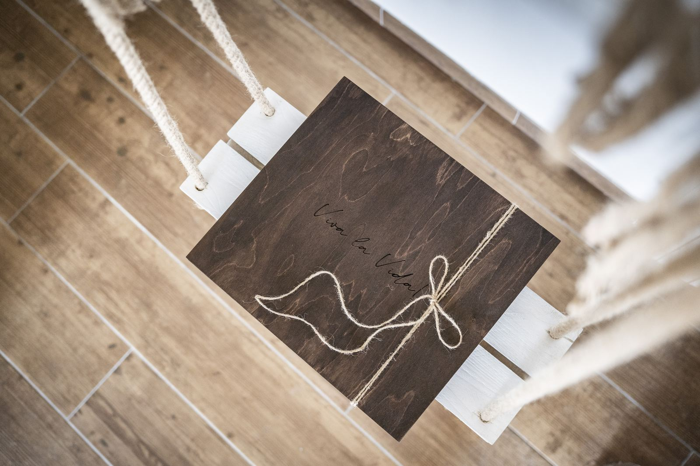

01
La Wedding Box
Ogni scatola e unica e viene personalizzata con i colori e gli oggetti che accompagnano la vostra giornata. Dentro ci finiscono le stampe, e con loro tutto il resto.
Come nasce →
Fotografo persone innamorate mentre iniziano il loro viaggio insieme. Poi metto la loro giornata dentro una scatola fatta apposta per loro.

Sono un fotografo di matrimoni professionista con sede a Torino. Da sempre svolgo la migliore professione che ci sia: fotografare persone innamorate mentre iniziano il loro viaggio insieme.
Mio nonno amava coltivare la sua vigna. Faceva anche un vino pregiato, semplice, ma molto buono. Diceva che se ci metti il cuore le cose vengono sempre bene, e che la semplicita ha un sapore senza tempo.
Oggi applico il suo insegnamento a quello che e il mio lavoro di fotografo di ricordi: ci metto il cuore, con semplicita. Un passo alla volta, uno scatto alla volta.
Daniele
Il matrimonio e il centro. Intorno, tutto quello che serve perche quel giorno resti qualcosa che si tocca.

Ogni scatola e unica e viene personalizzata con i colori e gli oggetti che accompagnano la vostra giornata. Dentro ci finiscono le stampe, e con loro tutto il resto.
Come nasce →
Qualche ora di divertimento, in cui si passeggia insieme nel momento di luce giusta. Ne nascono fotografie che spesso vengono stampate e messe nella scatola, insieme a quelle del matrimonio.
Vedi gli scatti →
Uno strumento che ci permette di raccontare una storia da un punto di vista insolito. La dove l'utilizzo e consentito, fa risaltare location emozionanti e paesaggi straordinari.
Guarda dall'alto →Le fotografie di un matrimonio finiscono quasi sempre in una cartella sul telefono. La Box nasce per il motivo opposto: dare alla vostra giornata un posto fisico, da aprire quando volete, da passare a qualcuno.
Ne parliamo prima. Colori, materiali, i dettagli che tornano nel vostro giorno: la scatola parte da li, non da un catalogo.
Ogni scatola e unica. Viene personalizzata con i colori e gli oggetti che accompagnano la giornata, incisione compresa.
Dentro ci va la selezione stampata. Le fotografie del matrimonio e, se le avete fatte, anche quelle prematrimoniali.
Il resto resta vostro. La galleria completa in alta risoluzione, scaricabile e condivisibile con chi c'era.

Filari, cortili, il mare sotto la villa. Dove l'utilizzo e consentito, il drone mostra la location come nessuno la vedra dal basso.
Se ci metti il cuore le cose vengono sempre bene. La semplicita ha un sapore senza tempo.Mio nonno, nella sua vigna
In una versione pubblicata queste tre schede arrivano dalle recensioni vere, aggiornate da voi quando volete.
Daniele c'era sempre e non l'abbiamo mai notato. Quando abbiamo aperto la scatola ci siamo emozionati una seconda volta.
Giulia e Marco · Villa in collinaLe prematrimoniali sono state la parte piu divertente. Ci ha fatto passeggiare e basta, e sono venute fuori le nostre foto preferite.
Sara e Alessandro · TorinoLa ripresa dall'alto dei filari e il regalo che abbiamo fatto ai nostri genitori. Non avevamo mai visto quel posto cosi.
Elena e Paolo · LangheScrivetemi dove e quando vi sposate. Vi rispondo con la disponibilita e due parole su come lavoro, senza impegno.
Via Archimede 13, Nichelino, Torino
Torino e Piemonte, tutta Italia, destination wedding
{kind=link}
{kind=link}
{kind=link}
{kind=link}
{kind=link}
{kind=link}
{kind=link}
{kind=link}
{kind=link}
{kind=link}
{kind=link}
{kind=link}
{kind=link}
{kind=link}
{kind=link}
{kind=link}
{kind=link}
{kind=link}
{kind=link}
{kind=link}
{kind=link}